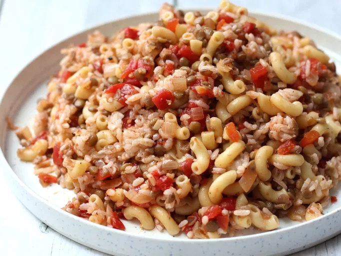

Koshari

Description
Lentils, rice and pasta are cooked and then served in a spicy tomato
sauce. This is a typical Egyptian dish that is
very good and cheap over here! Puree the sauce in a food
processor if you like a smoother texture.
Ingredients
- ¾ cup brown lentils
- 4 cups water
- ¾ cup uncooked long grain rice
- 1 cup elbow macaroni
- 2 tablespoons vegetable oil
- 2 large onions, chopped
- 4 cloves garlic, minced
- 1 (15.5 ounce) can diced tomatoes
- ¼ teaspoon red pepper flakes, or to taste
- salt and pepper to taste
Steps
-
Combine the lentils and water in a large saucepan. Bring to a boil, then
simmer over medium heat for 25 minutes. Add the rice to the lentils, and
continue to simmer for an additional 20 minutes, or until rice is
tender.
-
Fill a separate saucepan with lightly salted water and bring to a boil.
Add the macaroni and cook until tender, about 8 minutes. Drain.
-
Meanwhile, heat the vegetable oil in a large skillet over medium heat.
Add onion and garlic; cook and stir until onion is lightly browned. Pour
in the tomatoes and season with red pepper flakes, salt and pepper.
Simmer over medium heat for 10 to 20 minutes.
-
In a large serving dish, stir together the lentils, rice and macaroni.
Mix in the tomato sauce until evenly coated.
Home